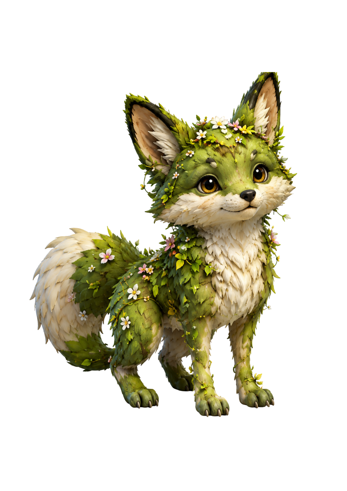
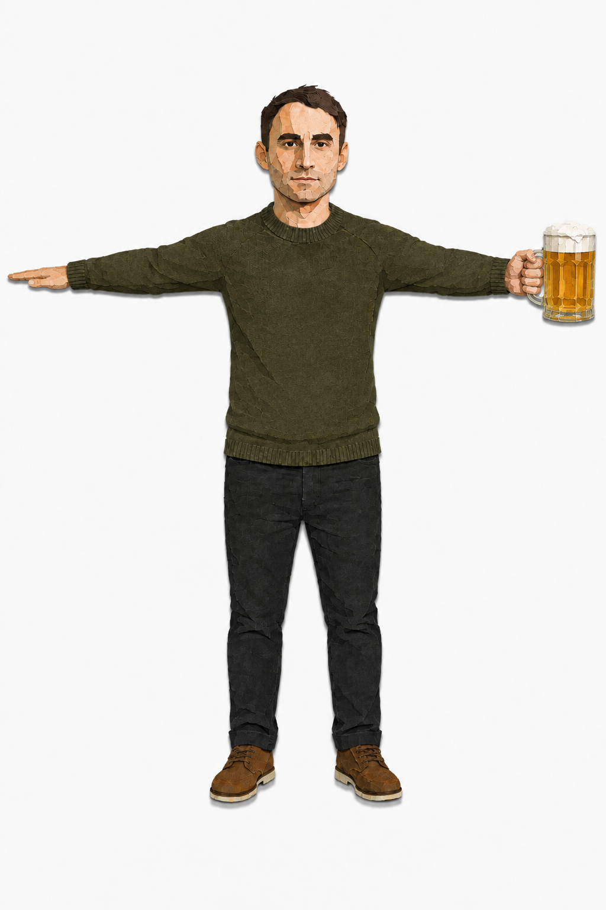

01 / 05 · INPUT → ASSET
Future pacing
What if one image
could become real?
A local path from reference to something you can inspect, iterate, and build with.

INPUT / IMAGE
OUTPUT / 3D ASSET
DEPTH / TEXTURE / MESHLOCAL
What if one image could become a real 3D asset — locally?
02 / 05 · LOCAL ROUTES

REFERENCE / 01
Demo loop
Reference in.
Textured model out.
IMAGE → RECONSTRUCTION → INSPECTABLE RESULT
01
Local route
reference / mesh / texture
READY
02
Local route
repeatable / inspectable
READY
03
Local route
experimental / extensible
READY
MANIFESTimage_to_3d_lab.yamlSEED 480361379a163 BACKENDS / LOCAL
Image to 3D Lab turns a reference into a textured model, with three local backends.
The result stays
inspectable.
BLENDER PREVIEW / TURN TABLE
nikita_holding_beer__trellis2
● VERIFIED
- artifact
- nikita_hero.glb
- hash
- 480361379a16
- settings
- commercial-conditional / 1024px
- license
- Stability AI Community License
- provenance
- receipt.json / re-runnable
Preview it in Blender. Re-run from a manifest. Keep hashes, settings, and license provenance beside every result.
04 / 05 · EXTENSIONS
Capability cascade
The lab opens up.
Once the asset is inspectable, the experiments can begin.
LABELLED WINDEXPERIMENTAL
Parts can moveMOSS FOX / WIND PASS
RIGGINGEXPERIMENTAL
Poses can changeNIKITA / EARLY RIG
VIEW 01 / VIEW 02 / VIEW 03
MULTI-VIEWEXPERIMENTAL
Views can multiplyREFERENCE SET / LAB
Then go further: multiple views, labeled parts for wind, and early rigging experiments.
Image to 3D Lab
Inspect.
Iterate.
Build.
From pixels to something you can work with — locally, reproducibly, visibly.
LOCALREPRODUCIBLEINSPECTABLE
From pixels to something you can inspect, iterate, and build with. Image to 3D Lab.